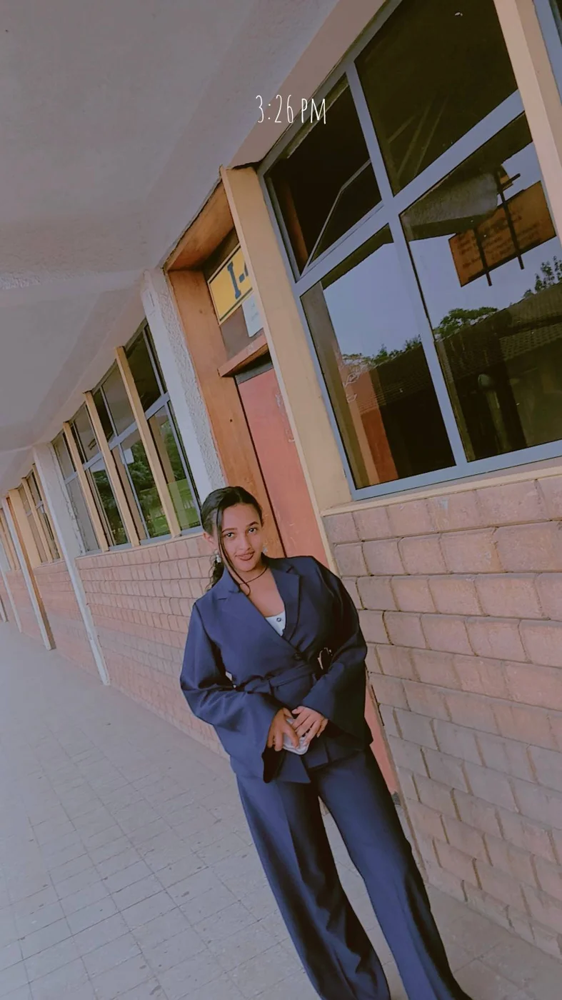

OPEN TO LEARNING, COLLABORATION & OPPORTUNITIES
AI DEVELOPER · SOFTWARE BUILDER · PROBLEM SOLVERHi, I'm Selamawit.
I build ideas into impact.
Computer Science student in Addis Ababa, Ethiopia. I create AI-powered applications and practical software, combining curiosity, code, and a drive to solve real problems.

● Exploring AI & innovation
</> Design • Develop • Deploy
06Featured projects
AI + WEBDevelopment focus
2027Expected graduation
ETHIOPIABuilding locally, thinking globally
01 / FEATURED WORK
View all projects ↗Selected projects.
Real applications and experiments that reflect how I learn by building.
02 / THE JOURNEY
More than code.
Learning through hackathons, conferences, leadership and community.
EVENTS & EXPERIENCEBuilding skills.
Building skills.
Meeting people.
Creating opportunities.
Every event adds something new: a lesson, a collaboration, a challenge, or a fresh perspective.
Explore my gallery ↗2026FAO / ASIF ForumInnovation and networking
2026Cursor AI HackathonTop 10 finalist · 8th place
2026AI Builder HackathonLearning by building
Have a problem worth solving?
I'm always interested in thoughtful projects, learning opportunities and conversations with people building meaningful technology.
Get in touch ↗